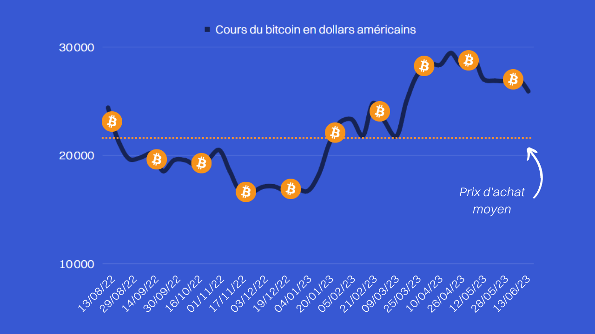

Pour cela, vous devez avoir une idée claire de la direction dans laquelle vous voulez vous engager en tant qu'investisseur. Pour ce faire, prenez une feuille, un cahier ou bien ouvrez un document texte sur votre ordinateur.
I. Les 4 piliers de votre roadmap
1️⃣ Durée de l'investissement
Premièrement, vous allez déterminer la durée de votre investissement :
| Horizon | Durée | Caractéristiques |
|---|---|---|
| Court terme | < 8 mois | ⚠️ Déconseillé aux débutants : demande beaucoup de suivi, de travail, et est très anxiogène |
| Moyen terme | 8 mois à 2 ans | ✅ Bon équilibre entre réactivité et sérénité |
| Long terme | 2 à 10 ans | ✅ Idéal pour lisser la volatilité et viser des gains structurels |
2️⃣ Les 4 parties de votre roadmap
Ensuite, vous allez créer quatre parties :
- Les domaines ciblés : Les différentes classes de crypto-actifs dans lesquels vous voulez investir.
- Le budget d'investissement : L'argent que vous souhaitez investir sur une période donnée (par exemple tous les mois).
- La gestion de risques : Comment répartir votre capital pour limiter les pertes.
- Votre bag (portfolio) : Un inventaire détaillé de tout ce que vous possédez en termes d'actifs.
II. Partie 1 : Les domaines ciblés
Dans la première partie, vous entrez les domaines et les classes de crypto-actifs que vous voulez cibler :
- Altcoins à fondamentaux
- Shitcoins / Memecoins (à éviter ou limiter fortement)
- Projets Métaverse
- Projets NFTs
- Projets Web 3.0
- Finance décentralisée (DeFi)
- Layer 2 & Scalabilité
- Blockchains innovantes
1️⃣ Les projets d'applications décentralisées ayant une réelle utilité
2️⃣ Les projets métaverses
3️⃣ Les blockchains que je juge novatrices de par leurs architectures innovantes
III. Partie 2 : Budget & stratégie DCA
Dans la deuxième partie, vous renseignez la quantité de fonds que vous souhaitez investir sur une période donnée.
📈 La stratégie DCA (Dollar Cost Averaging)
Personnellement, j'ai opté pour du DCA (Dollar Cost Average) tous les mois. Cela signifie que, peu importe le prix des tokens dans lesquels je souhaite investir, je mettrai toujours la même quantité d'argent tous les mois. Ce qui permet de lisser les prix d'entrée.
• Janvier : BTC à 30 000$ → J'achète 0,00333 BTC
• Février : BTC à 27 000$ → J'achète 0,00370 BTC
• Mars : BTC à 32 000$ → J'achète 0,00312 BTC
Total investi : 300$
Total BTC acquis : 0,01015 BTC
Prix moyen d'achat : 300$ ÷ 0,01015 ≈ 29 500$/BTC
Si j'avais mis tout mon capital (300$) le premier mois, je l'aurais payé 30 000$ > 29 500$. Le DCA m'a donc fait économiser ~1,7%.
En effet, il ne faut surtout pas mettre tous ses œufs dans le même panier, seulement, les mettre tous dans un panier différent diluerait énormément les gains potentiels. Il vous sera assez compliqué d'investir sérieusement sur des dizaines et dizaines de tokens, à moins que vous ayez les fonds suffisants.

IV. Partie 3 : Gestion de risques via le Market Cap
Vous devez savoir que le risque de chutes ou de hausses d'une crypto est directement lié à son Market Cap (MC).
🔍 Comprendre l'impact du Market Cap
Prenons deux cryptomonnaies comme exemples :
| Critère | Ethereum (ETH) | Ultra (UOS) |
|---|---|---|
| Classement MC | #2 (400 milliards $) | #154 (300 millions $) |
| Prix du token | ~3 000$ | ~0,30$ (exemple) |
| Pour doubler le prix | +400 milliards $ d'investissement | +300 millions $ d'investissement |
| Pour diviser le prix par 2 | -200 milliards $ de retraits | -150 millions $ de retraits |
Mais le risque est aussi beaucoup plus élevé : il suffirait d'un retrait de 150 millions pour voir le prix d'Ultra se diviser par deux, alors qu'il faudrait retirer 200 milliards pour Ethereum.
🎯 Stratégie de répartition par Market Cap
La gestion de risques consiste ni plus ni moins qu'à répartir son bag d'investissement sur des cryptomonnaies avec des MC différents, de sorte à diluer ses risques.
| Catégorie MC | Allocation | Profil risque/rendement |
|---|---|---|
| Large Cap (> 6 milliards $) |
25% | 🟢 Gains modérés / Risque faible Projets ayant fait leur preuve |
| Mid Cap (1 à 6 milliards $) |
35% | 🟡 Gains et pertes modérés Potentiel de croissance intéressant |
| Small Cap (< 1 milliard $) |
40% | 🔴 Risque élevé / Gains potentiels conséquents Réserve aux projets bien analysés |

V. Partie 4 : Votre bag (portfolio)
Pour la dernière partie, celle de votre bag, vous inscrivez simplement chacun de vos investissements réalisés et donc le nombre de tokens que vous possédez de cette crypto.
📋 Exemple de suivi de portfolio
📦 MON BAG - Mise à jour : JJ/MM/AAAA
🔹 100 UOS (Ultra)
→ Blockchain et plateforme d'achat/vente de jeux vidéos utilisant les NFTs
→ Catégorie : Small Cap (< 1 Md$) | Risque : Élevé
🔹 1 000 ONE (Harmony)
→ Blockchain permettant l'émergence de Smart Contracts, interopérable et DeFi
→ Catégorie : Mid Cap (1-6 Md$) | Risque : Modéré
🔹 0,4 BTC (Bitcoin)
→ Blockchain et cryptomonnaie pionnière, réserve de valeur numérique
→ Catégorie : Large Cap (> 6 Md$) | Risque : Faible
🔹 ... (jusqu'à 20 lignes maximum)• Indiquez la catégorie de Market Cap pour visualiser votre exposition au risque
• Mettez à jour régulièrement (ex: mensuellement) sans trader émotionnellement
• Conservez une copie hors ligne ou sur un support sécurisé
VI. Template de roadmap à copier
🗺️ MA ROADMAP CRYPTO - [Votre Nom]
📅 Horizon : [Court/Moyen/Long] terme
🎯 DOMAINES CIBLÉS :
• [Ex: DeFi, Métaverse, Layer 2...]
• [Ex: Blockchains innovantes...]
💰 STRATÉGIE DCA :
• Montant mensuel : [Ex: 200€/mois]
• Nombre max de cryptos : [Ex: 20]
• Fréquence d'achat : [Ex: 1er du mois]
⚖️ GESTION DE RISQUES :
• Large Cap (>6 Md$) : 25%
• Mid Cap (1-6 Md$) : 35%
• Small Cap (<1 Md$) : 40%
🎒 MON BAG :
[Token] - [Description] - [Catégorie MC] - [Date d'achat]
1. ...
2. ...
...
20. ...
🔄 Révision prévue : [Date]• Définir une stratégie claire et la suivre disciplinairement
• Lisser vos prix d'entrée via le DCA
• Diluer vos risques via une allocation par Market Cap
• Suivre vos positions sans émotion
La clé du succès ? La constance, pas la prédiction.